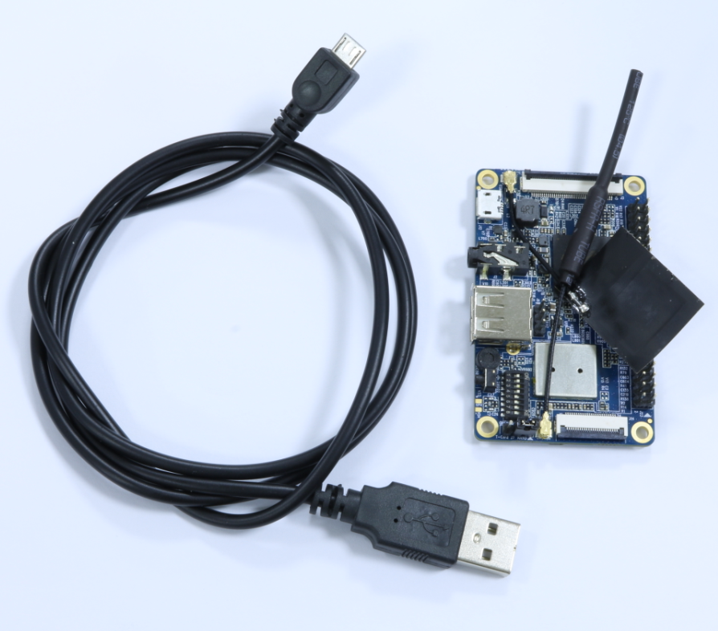
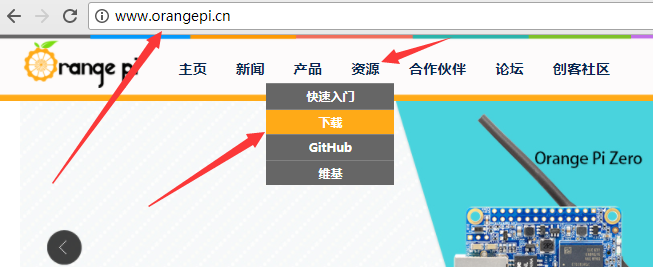
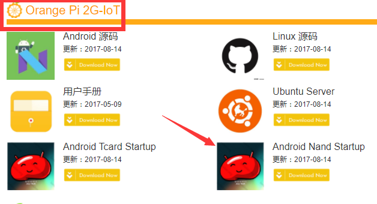
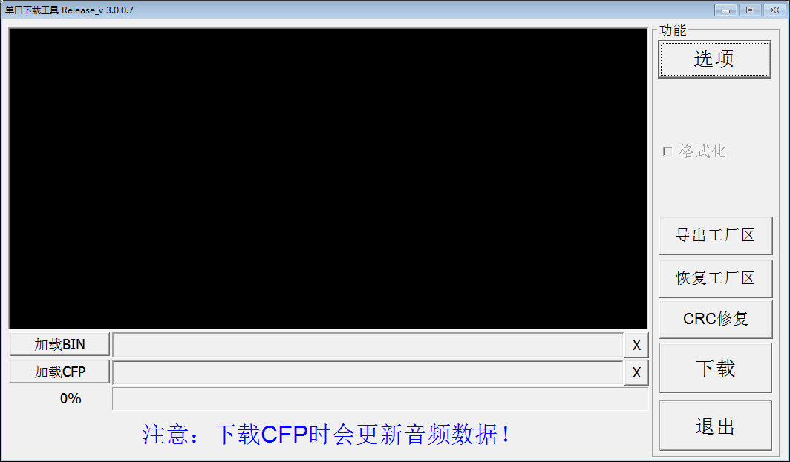
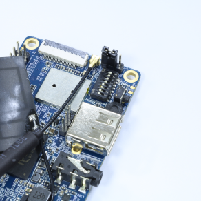
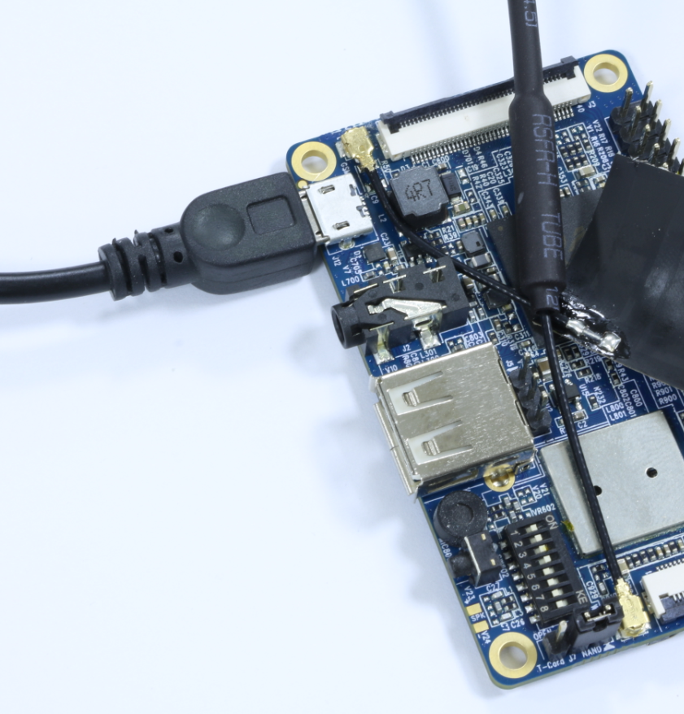
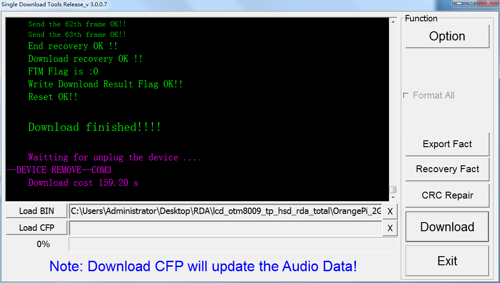

OrangePi_2G-IOT升级NAND中的Android
本文来自OrangePi 2G-IOT: 升级 NAND 中的 Android
http://www.orangepi.cn/orangepibbscn/forum.php?mod=viewthread&tid=417&fromuid=6058
(出处: 香橙派)
有删改。
OrangePi 2G-IOT提供了两种方式的 Android 启动, 分别为 SD 卡启动和 Nand 启动。
当需要升级 SD 卡或者 Nand 里的 Android 系统时，OrangePi 2G-IOT 分别提供了不同的方法。
本文重点介绍如何升级 Nand 中的 Android 系统。

1. 准备镜像和工具
目前官网已经提供 NAND 启动的 Android 镜像，开发者可以从 OrangePi 官网获得最新的镜像


2. 安装 NAND 更新工具
目前提供的 Nand 更新工具只能在 Windows 上运行，官网已经提供该工具的下载入口，开发者可以从官网上获得最新的下载工具
链接: http://pan.baidu.com/s/1c2lJJZM 密码: jp7x
工具下载完毕之后，解压可获得两个目录。
1） 安装 USB 驱动
Nand 升级需要使用 USB 线进行连接，因此安装必要的驱动。
驱动位于 */OrangePi_2G-IOT/Toolschain/USB Driver/USB-driver"
请根据 Windows 的位数进行安装，驱动提供了 32bit 和 64bit 两个版本。
注意：有时烧写工具不能获取到设备，可能是因为Windows自动装了自带的驱动，那个驱动用不了，得手动选择驱动进行安装。
2）NAND 工具为免安装工具，即点即用
升级工具位于： \*/OrangePi\_2G-IOT\_Toolschain/OrangePi\_2G-IOT\_NandUpdate\_Tools/OrangePi\_2G-IOT\_升级工具.exe
运行该工具：
 点击 “加载 BIN” 按钮，选择从官网上下载的 Nand 版 Android 镜像。
最后点击 “下载” 按钮，进入下载准备状态。
3. 更新 OrangePi 2G-IOT NAND
在更新 OrangePi 2G-IOT 之前，需要将拨动开关拨动到正确的位置，具体拨动如下：
开关 “1234” 为 “UP”, "5678" 为 “DOWN”

跳接帽选择 “NAND” 模式。
确保上面步骤正确完成之后，使用 USB 线，一端连接 OrangePi 2G-IOT OTG 口，并按住电源键不放，

再将 USB 口另外一端连接 PC， 此时等待连接的 NAND 升级工具会打印出连接成功的信息，并开始下载程序到 NAND里，
大约花费 3-4 分钟的时间，NAND 工具会打印烧写成功的信息。

至此， OrangePi 2G-IOT 升级成功